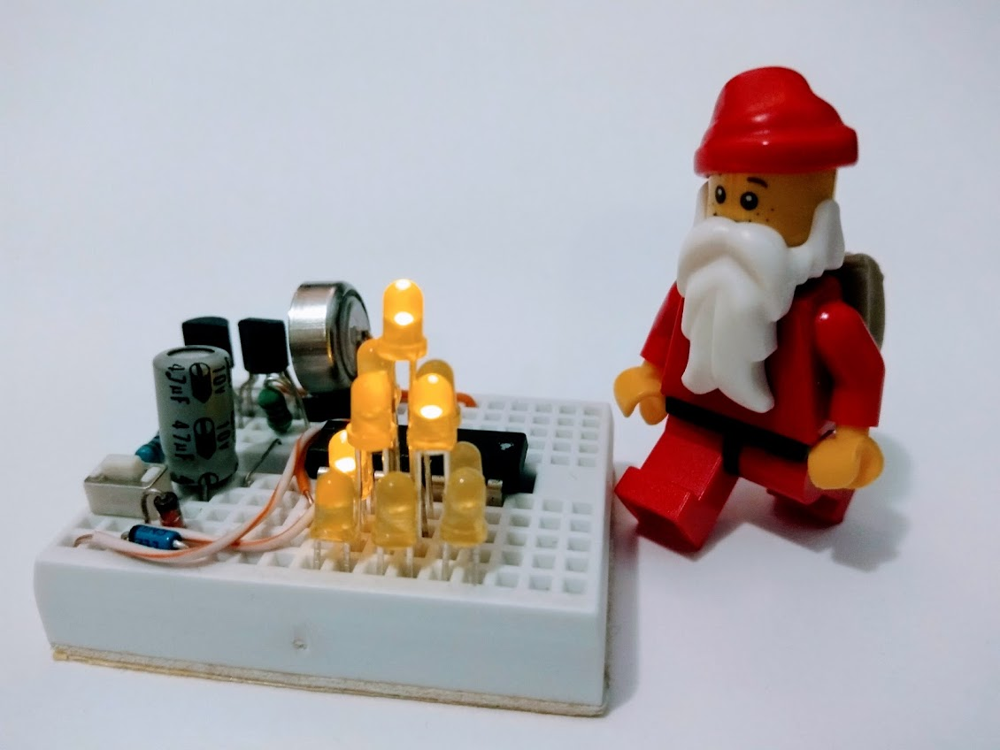

A minimalist 1.5V coin cell led tree with all components and power source confined within a mini breadboard.

Description
This is a holiday project targeting the 2017 December HackaDay coin cell challenge.
The objective is to employ a 1.5V button cell to drive microcontroller based holiday led display.
A minimalist design with all components and power source confined within a mini breadboard.
A joule thief circuit is used to step up the voltage from the 1.5V button cell to power the microcontrollers and leds.
Details
A joule thief circuit is used to step up the voltage from the 1.5V button cell to power the microcontrollers and leds.
A push button instead of a switch is used to complete the joule thief circuit.
Initial push button depress starts the joule thief and supply start up voltage to the microcontroller (which operates at 1.8V to 3.6V).
A zener diode limits the maximum voltage to 3.3V. This can be replaced by a 3.6V zener if higher voltage is needed
Once the microcontroller boots up, and the push button releases, the microcontroller takes control of the joule thief.
Microcontroller samples the supply voltage via internal ADC and switch on the joule thief (mimicking a push button depress) when voltage is less than 3.2V and switch it off when voltage is below 3.2V. This provide certain efficiency benefits to the otherwise inefficient joule thief circuit. The voltage threshold can be altered via source code change.
The led christmas tree cycles in a fixed lighting sequence.
There are 4 + 1 different display modes; breathing, solid, throbing, and twinkle, plus an automatic cycling of the four modes.
The display starts w/ a breathing display mode when initially turned on, and cycles between the above-mentioned 4+1 modes upon keypress.
The same I/O pin is used for switching the joule thief and for push button reading. The firmware switches the I/O pin periodically to input and reads the button state.
A long keypress will shut-down the display via switching off the joule thief, leading to collapse of the voltage supplying to the microcontroller.
The entire build incluing power is on a 170 tie-point mini breadbroad.
This project demonstrates an switching joule thief design, timers and interrupts, analog digital conversion usage, and LED multiplexing / charlieplexing.
Application Notes
Single button press turns on led tree
Subsequent single button press (indicate by top led on) rotates these display modes; breathing, solid, throbing, and twinkle, and cycling
Long press (indicate by 2 led on) turns off led tree